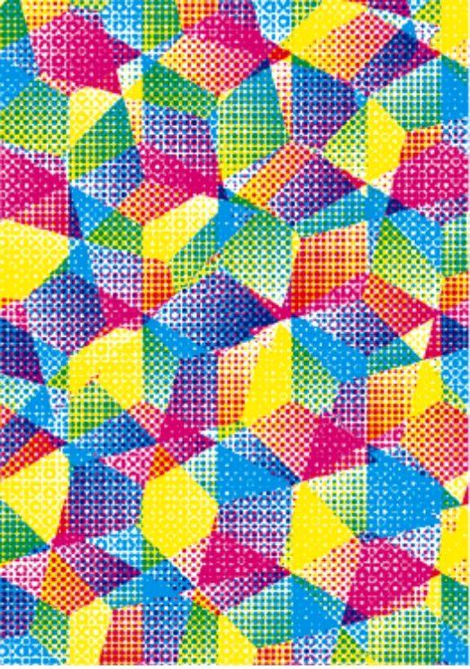
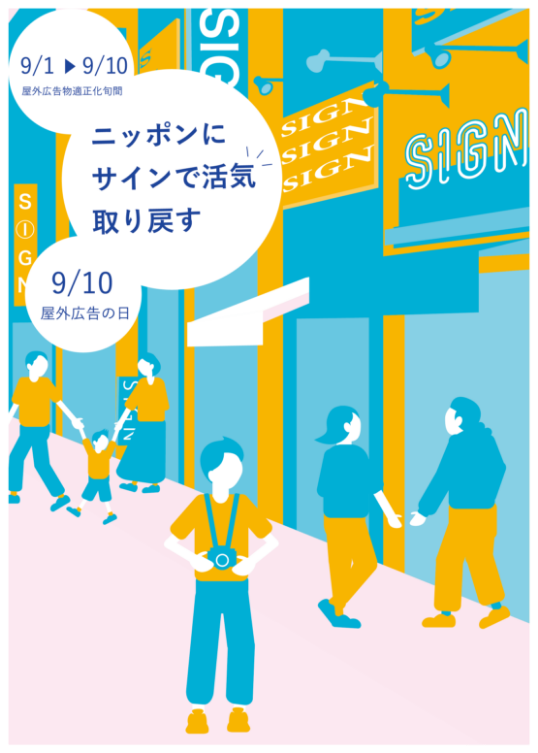
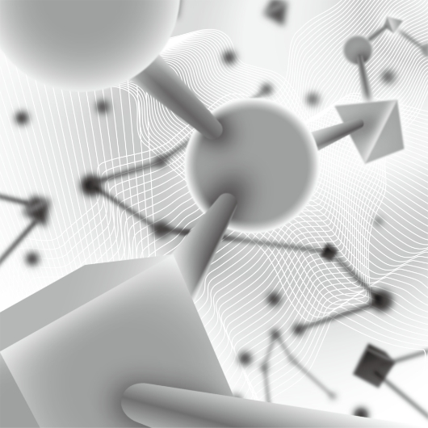

SCHOOL WORK
各種公募のポスターデザイン。

SCHOOL WORK
色彩検定ポスターデザイン。抽象的な表現をすることを試みた。印刷物の網点による色の出し方に注目してハーフトーンを使用した。CMYの三原色のみを使用し重ねることで様々な色味をだした。万華鏡のような不規則さが画面全体におもしろみを出している。

SCHOOL WORK
屋外広告のポスターデザイン。主意標語を使用した制作のためレイアウト構成に苦労した。実際にある街並みを撮影しにいきそれをもとにパスを制作した。また色味を３色に限定して構成してみた。

SCHOOL WORK
技能と技術誌ポスターデザイン。技能と技術という概念を元に制作。表現にとても苦労した。感じたことは、オブジェクトが具象物であればその物が持つイメージやメッセージを伝えやすいということ。
BACK